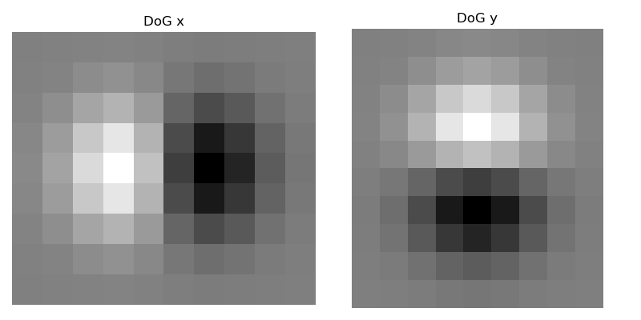
DoG filters in x and y

Edges using the DoG filters
Identical to the blur-then-differentiate result.
In this project, I explore how filtering an image changes it in both the spatial and the frequency domain. In Part 1, I implement convolution from scratch and use finite difference and Gaussian filters to detect edges. In Part 2, I use the same ideas to sharpen images, build hybrid images that change depending on viewing distance, and blend images together seamlessly using Gaussian and Laplacian stacks.
I implemented 2D convolution using only numpy, first with four nested for loops and then with two. Both versions flip the kernel before sliding it over the image (without the flip, the operation would be correlation, not convolution), and both use zero padding in "same" mode, so the output is the same size as the input.
The padding adds a total of \(k_h - 1\) rows and \(k_w - 1\) columns of zeros around the image. The image is placed at row \(k_h // 2\) and column \(k_w // 2\),
which splits the padding the same way scipy.signal.convolve2d does. This only matters for even-sized kernels like \(D_x\), but without it the result is shifted by one pixel.
def pad(img, kernel):
kh, kw = kernel.shape
H, W = img.shape
output = np.zeros((H + kh - 1, W + kw - 1))
output[kh // 2 : kh // 2 + H, kw // 2 : kw // 2 + W] = img
return outputThe four-loop version loops over every output pixel \((i, j)\) and every kernel entry \((h, w)\), multiplying and summing one value at a time:
def convolve_4_loops(img, kernel):
k = kernel[::-1, ::-1] # flip
p = pad(img, k) # pad with zeros
kh, kw = k.shape
output = np.zeros((p.shape[0] - kh + 1, p.shape[1] - kw + 1))
for i in range(output.shape[0]):
for j in range(output.shape[1]):
for h in range(kh):
for w in range(kw):
output[i, j] += p[i + h, j + w] * k[h, w]
return outputThe two-loop version replaces the two inner loops with a single numpy operation: it takes the window of the padded image under the kernel, multiplies it element-wise with the kernel, and sums the result.
def convolve_2_loops(img, kernel):
k = kernel[::-1, ::-1] # flip
p = pad(img, k)
kh, kw = k.shape
output = np.zeros((p.shape[0] - kh + 1, p.shape[1] - kw + 1))
for i in range(output.shape[0]):
for j in range(output.shape[1]):
output[i, j] = np.sum(p[i:i + kh, j:j + kw] * k)
return outputI tested both implementations on a grayscale picture of myself with three filters: a 9×9 box filter (every entry is \(1/81\), so it averages each pixel's neighborhood), and the finite difference operators \(D_x = [1, -1]\) and \(D_y = [1, -1]^T\).
box = np.ones((9, 9)) / 81
Dx = np.array([[1, -1]])
Dy = np.array([[1], [-1]])
Both of my implementations match scipy.signal.convolve2d(..., mode="same") for all three filters. The largest difference between my results and scipy's was on the order of \(10^{-15}\),
which is just floating-point rounding. The runtimes were:
| Filter | 4 loops | 2 loops | scipy | Max difference from scipy (4 loops / 2 loops) |
|---|---|---|---|---|
| 9×9 box | 26.08 s | 2.40 s | 0.1266 s | 3.9e-15 / 2.3e-15 |
| \(D_x\) | 0.82 s | 2.31 s | 0.0083 s | 0 / 0 |
| \(D_y\) | 0.87 s | 2.30 s | 0.0108 s | 0 / 0 |
For the 9×9 box filter, the two-loop version is about 11× faster than the four-loop version, because the 81 multiplications per pixel happen inside numpy's compiled code instead of in Python loops. scipy is about 19× faster still, since the entire convolution runs in compiled code. Interestingly, for the tiny 1×2 and 2×1 difference operators, the four-loop version is actually almost 3× faster than the two-loop version: with only 2 multiplications per pixel, the overhead of calling numpy for every pixel costs more than the multiplications themselves.
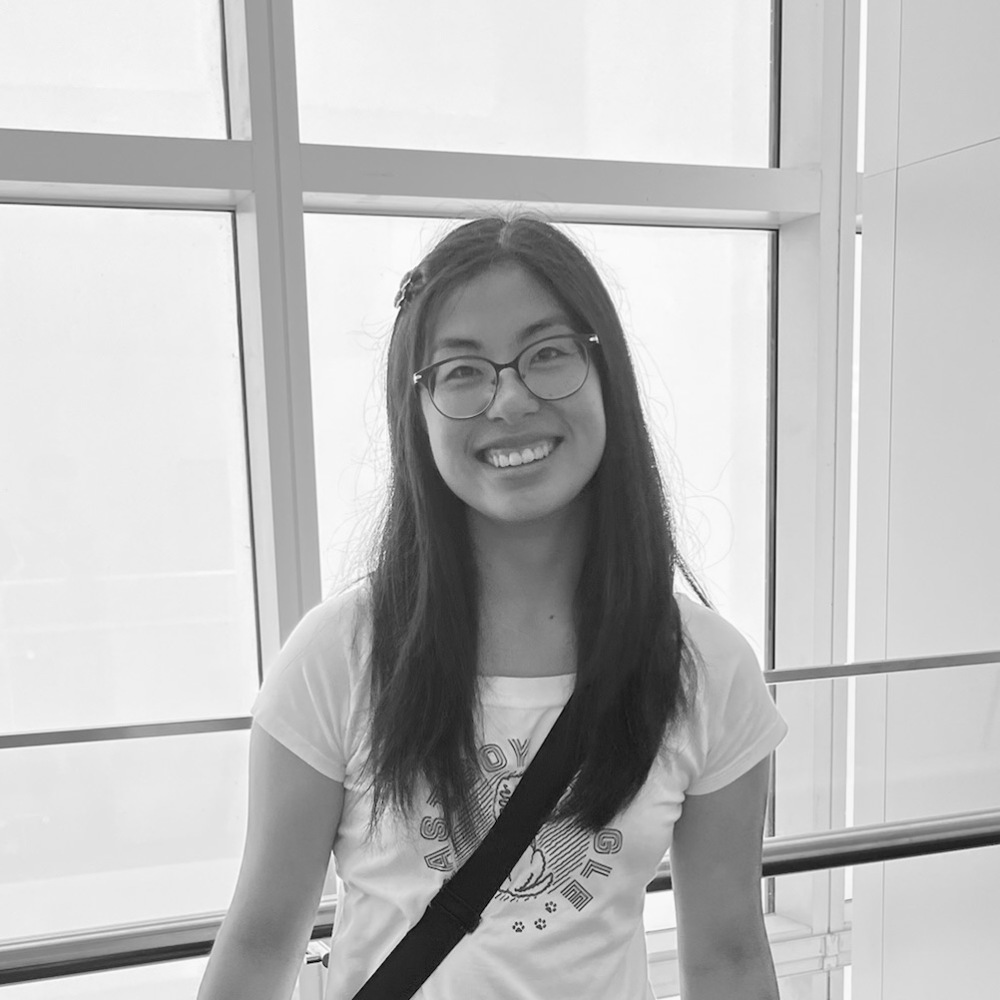
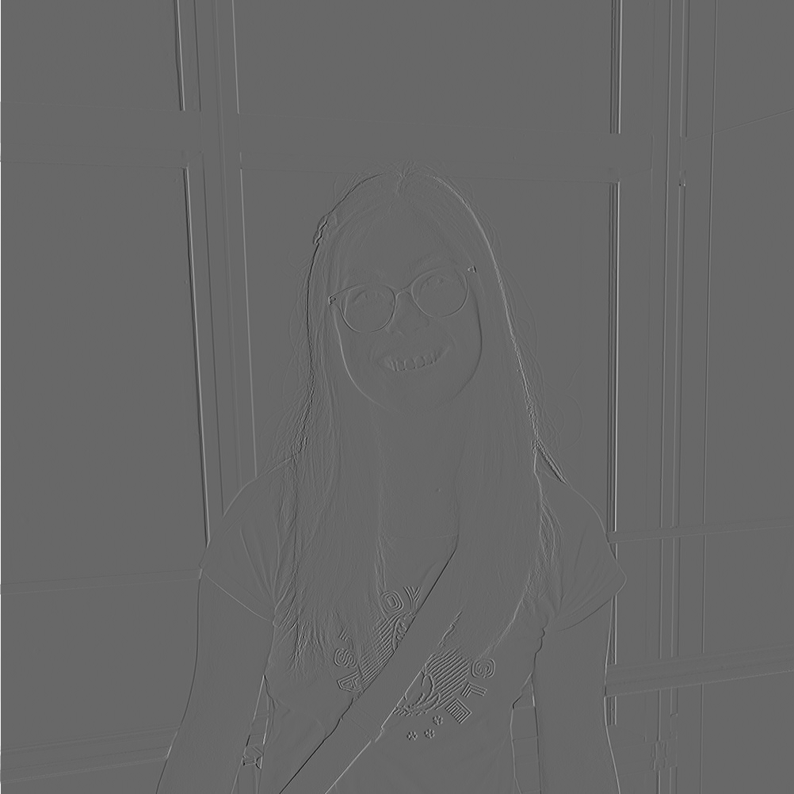
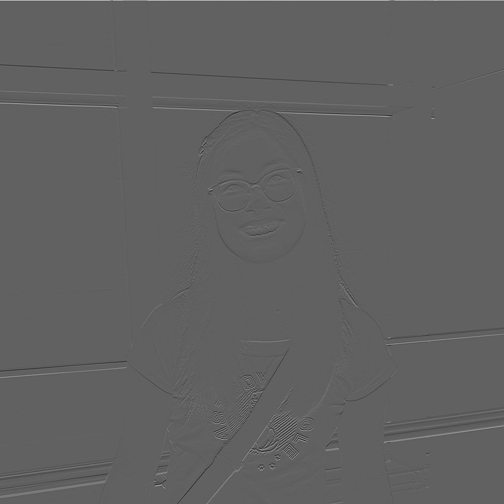
To find edges in the cameraman image, I convolved it with \(D_x\) and \(D_y\) to get the partial derivatives in \(x\) and \(y\), then combined them into the gradient magnitude:
$$ \|\nabla I\| = \sqrt{\left(\frac{\partial I}{\partial x}\right)^2 + \left(\frac{\partial I}{\partial y}\right)^2} $$
The gradient magnitude measures how strongly the brightness changes at each pixel, regardless of the direction of the edge.
I used symmetric boundary handling (boundary="symm") instead of zero padding here, since zero padding creates an artificial edge along the image border.
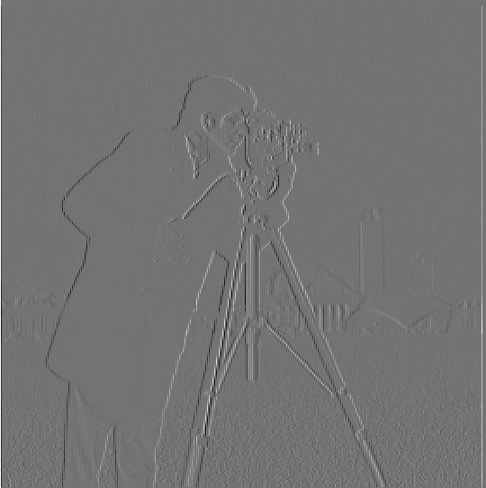
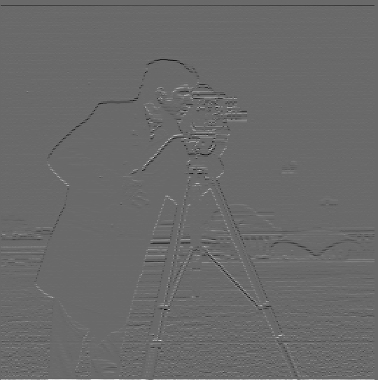
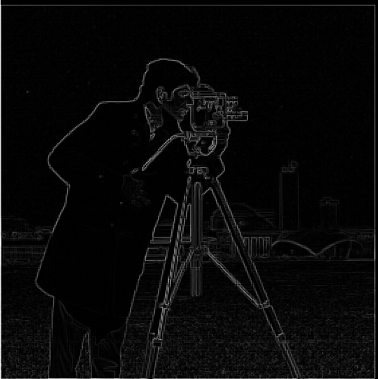
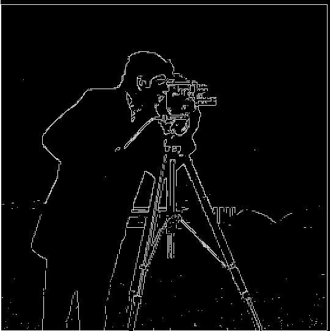
To turn the gradient magnitude into an edge image, every pixel above a threshold is marked as an edge. I tried several thresholds and compared them qualitatively. Low thresholds keep all the real edges, including the buildings in the background, but the grass is covered in noise. High thresholds remove the noise, but the outlines of the coat and tripod start to break apart. A threshold of 0.25 gave the best balance: the grass is mostly clean, while the man, the camera, and the tripod stay outlined.
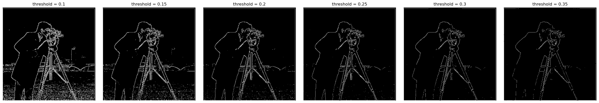
The results with only the difference operators were noisy, because the derivative reacts to every small pixel-to-pixel variation, like the texture of the grass.
To fix this, I first blurred the image with a Gaussian filter \(G\), then repeated the same procedure. I built the 2D Gaussian by taking the outer product of a 1D Gaussian from
cv2.getGaussianKernel(9, 1.5) with its transpose, which gives a 9×9 kernel with \(\sigma = 1.5\).
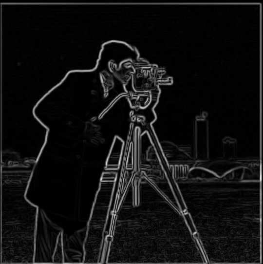
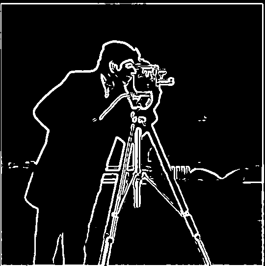
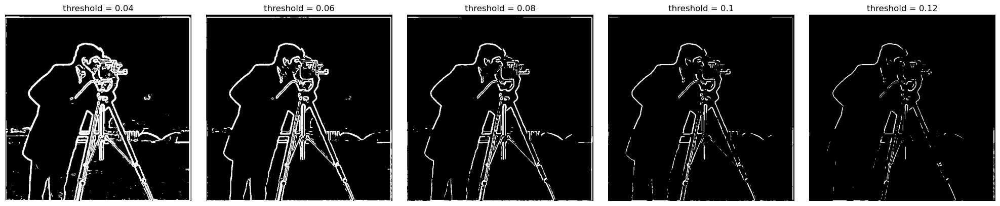
Compared to Part 1.2, the edge image after smoothing is noticeably different:
Much less noise. The blur averages out the small variations in the grass before the derivative is taken, so the speckles at the bottom of the image almost completely disappear.
Thicker, smoother edges. Blurring spreads each edge over several pixels, so the outlines are wider and less jagged.
More continuous outlines. The edges of the coat and tripod legs no longer break into separate segments.
A lower threshold. Because each edge is spread out, the brightness change between neighboring pixels is smaller, so the gradient values drop overall. The best threshold went from 0.25 down to 0.06.
Since convolution is associative, blurring and then differentiating is the same as convolving once with a derivative of Gaussian filter: $$ (I * G) * D_x = I * (G * D_x) $$ I built the DoG filters by convolving \(G\) with \(D_x\) and \(D_y\). Each filter has a positive (light) half and a negative (dark) half, so it gives zero on flat regions and responds to edges in one direction. Convolving the image with these filters gave the same result as the two-step version: the maximum difference was on the order of \(10^{-16}\).

A Gaussian filter is a low-pass filter: it keeps only the low frequencies. Subtracting the blurred image from the original therefore leaves only the high frequencies, and adding more of those back makes the image look sharper: $$ \text{sharpened} = f + \alpha\,(f - f * G) $$ This can be combined into a single convolution, called the unsharp mask filter, where \(e\) is the unit impulse (a 1 in the center and 0 elsewhere): $$ \text{sharpened} = f * \big((1 + \alpha)\,e - \alpha\,G\big) $$ I verified that the single convolution matches the two-step version, and applied it to each color channel separately. Values outside \([0, 1]\) are clipped.

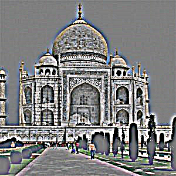
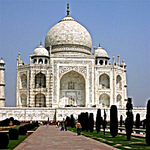
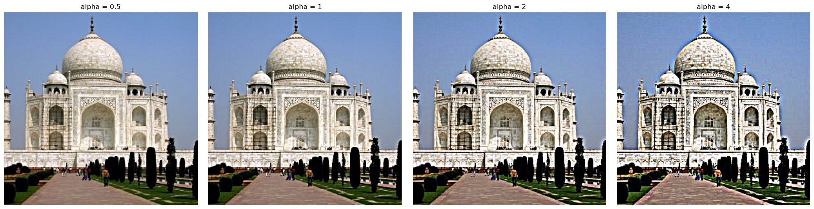
The sharpened Taj Mahal looks crisper than the original: the outlines of the dome and minarets are more defined, and fine details like the carvings and the edges of the arches stand out more. Increasing \(\alpha\) makes the effect stronger, but at high values the image starts to look artificial: bright and dark halos appear along strong edges like the outline of the building against the sky, and noise in smooth areas like the sky gets amplified. Sharpening also cannot recover detail that was never in the image; it only boosts the high frequencies that are already there, which is why it makes an image look sharper rather than actually adding information.
I also sharpened a slightly out-of-focus photo of a lake shore. This photo is much larger than the Taj Mahal image (over 2000 pixels wide), so I first resized it to 1000 pixels wide and used a larger Gaussian (\(\sigma = 3\)). With \(\sigma = 1.5\), the filter only removed detail a pixel or two wide, which is invisible at normal viewing size, so the sharpening had no visible effect. Since the kernel needs to grow with \(\sigma\), I set its size to about \(6\sigma\), which covers nearly all of the Gaussian.
At \(\alpha = 1\) to \(2\), the thin reeds, the posts and railings of the pier, and the ripples on the water become noticeably crisper. At \(\alpha = 4\), the sand and water are covered in amplified grain, and bright and dark halos appear around the reeds and the people. The faces and hair stay soft at every strength, since sharpening only increases the contrast of edges that are already there.
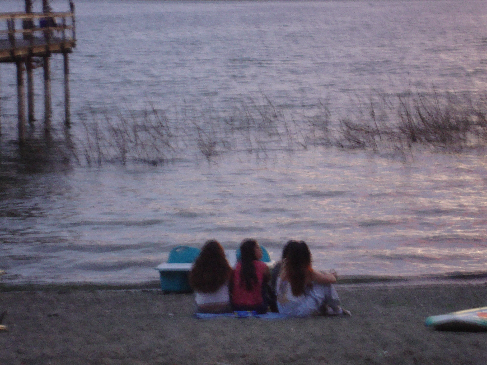
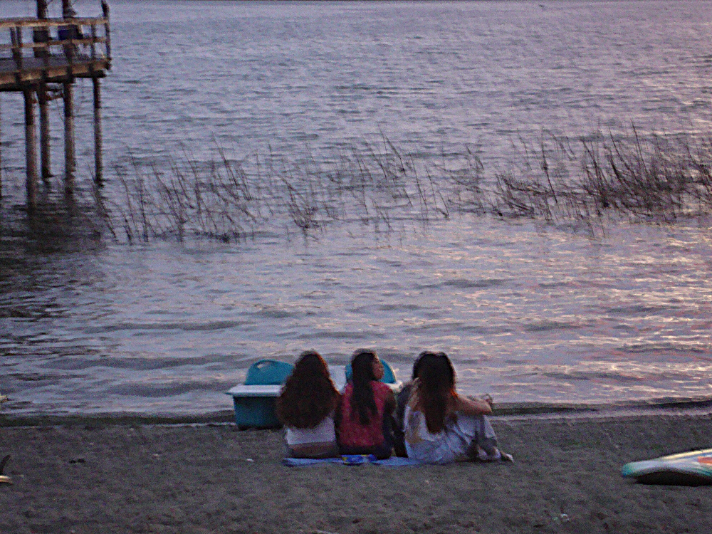
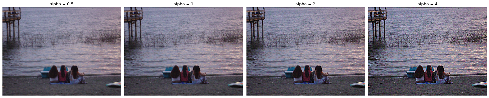
To evaluate how well sharpening works, I took a sharp photo of myself, blurred it with a Gaussian (\(\sigma = 3\)), and then sharpened the blurred version with the unsharp mask filter (\(\sigma = 3\), \(\alpha = 1.5\)).
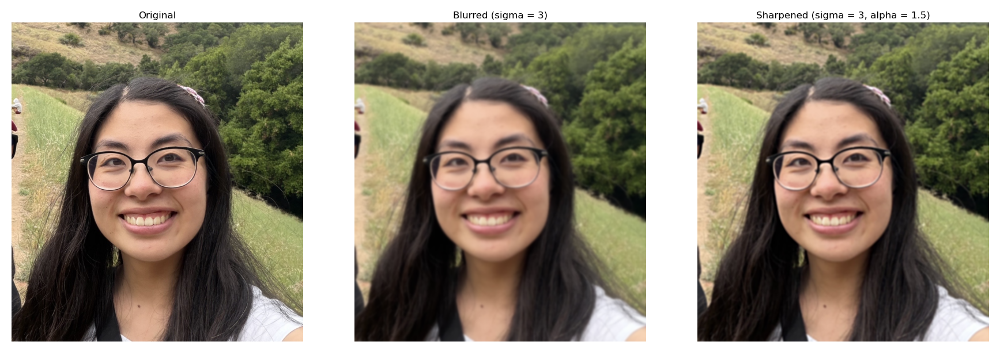
At a glance, the sharpened image looks close to the original. Strong, high-contrast edges like the rims of my glasses, my eyes, eyebrows, and teeth, and the outline of my face look crisp again. But fine texture did not come back: the individual stray hair strands, the blades of grass, and the texture of the leaves are gone in the blurred image and stay smooth after sharpening. Those details are smaller than the blur, so the blur removed them completely, and sharpening can only boost high frequencies that are still in the image. Strong edges survive the blur in weakened form, which is why their contrast can be restored.
The numbers support this. The mean absolute difference from the original was 0.031 for the blurred image and 0.026 for the sharpened image: sharpening makes the image look much sharper, but brings it only slightly closer to the original. Information lost to blurring cannot be recovered by sharpening.
A hybrid image combines the high frequencies of one image with the low frequencies of another. Up close, the high frequencies dominate perception; from far away, only the low frequencies are visible, so the interpretation changes with viewing distance: $$ \text{hybrid} = \underbrace{(I_1 - I_1 * G_{\sigma_1})}_{\text{high pass}} + \underbrace{I_2 * G_{\sigma_2}}_{\text{low pass}} $$
Before filtering, the two images are aligned by clicking two corresponding points (the eyes) in each. I added an extra channel of ones to each image before aligning it: after alignment, that channel is 0 wherever padding was added, so I could automatically crop away the black borders created by recentering and rotating. For large blurs, I used the fact that a 2D Gaussian is separable and convolved with a 1D Gaussian vertically and then horizontally, which gives the same result much faster. I worked in grayscale, which removes the effect of strong colors in one image overpowering the other.
Finding good values for \(\sigma_1\) and \(\sigma_2\) took a lot of experimentation. A few things I learned:
Sigma depends on resolution. Sigma is measured in pixels, so values that work for high-resolution phone photos are far too large for small images. For small images, a sigma of 8 erased the facial features entirely.
A larger \(\sigma_1\) strengthens the high image. It keeps more mid-sized structure (like the shape of the eyes and mouth), not just fine texture. Too large, and the high image is still visible from far away.
Weighting the high-pass has limits. Multiplying the high-pass image by a weight above 1 made the close-up image stronger, but also produced harsh halos and clipping, like an over-sharpened photo.
The choice of images matters. An earlier pair of two similar-looking faces produced a hybrid where it was hard to tell who was who at any distance.
My favorite result uses a current photo of me for the high frequencies and a childhood photo for the low frequencies. Up close, the glasses and smile of the current photo dominate; from far away, the headband and long dark hair of the childhood photo take over. The childhood photo is small (about 350 pixels wide), so both sigmas needed to be small. I also cropped the current photo so the window frames in its background would not show up as strong lines in the high-pass image.
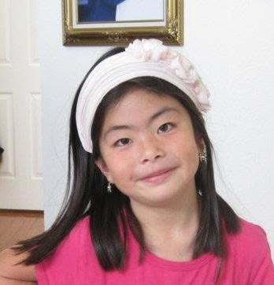
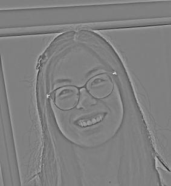
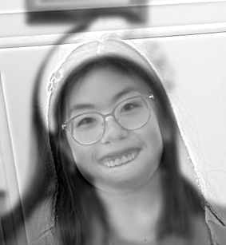
The plots below show the log magnitude of the Fourier transform of each image. The center of each plot is the lowest frequency, and frequency increases toward the edges. Both inputs have most of their energy near the center, as natural photos do. The low-pass image keeps only the bright center, since the Gaussian removed the higher frequencies, while the high-pass image is the opposite, with a dark center and the outer frequencies kept. The hybrid combines both: its center comes from the childhood photo and its outer region from the current one.
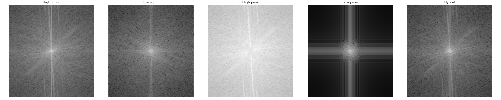
For this pair, I used a photo of me for the high frequencies and a smiling cat for the low frequencies. The two smiles and the closed eyes lined up well after alignment. At first, my face dominated even when the image was shrunk, so the cat was hard to see from a distance. Lowering \(\sigma_1\) kept only fine detail of my face, and scaling the high-pass image by 0.7 weakened it further, so the cat's ears, stripes, and muzzle come through when the image is viewed small.
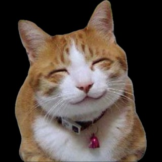
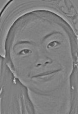
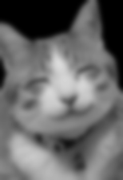
A stack is like a pyramid, except the images are never downsampled, so every level has the same size as the original. Each level of my Gaussian stack blurs the previous level, with \(\sigma\) doubling at every level (2, 4, 8, ...) so the stack behaves like a pyramid that halves in size each level. Each level of the Laplacian stack is the difference between two neighboring Gaussian levels, which is the band of detail lost between them. The last level is the blurriest Gaussian level itself, so all the Laplacian levels add back up to the original image exactly.
To blend the apple and the orange, I built Laplacian stacks for both images and a Gaussian stack for a step-function mask. At each level, the apple is weighted by the mask and the orange by one minus the mask. Because the mask is blurred more at every level, the fine details are blended across a narrow seam, while the colors and overall brightness are blended across a wide area, which hides the seam. In the figure below, the Laplacian levels are shown with zero as mid-gray.
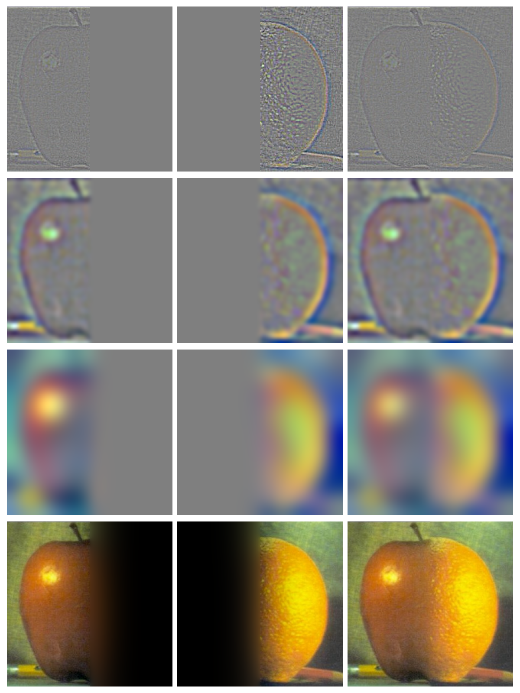
Using the stacks from Part 2.3, I blended images with any mask: $$ \text{blend} = \sum_{i} \Big( G_i^{\text{mask}} \cdot L_i^{(1)} + \big(1 - G_i^{\text{mask}}\big) \cdot L_i^{(2)} \Big) $$ For irregular shapes, I used an ellipse mask. Since the ellipse takes the same position in both images, I also wrote a small function that scales and shifts the first image so that a chosen point (like the center of a face) lands on a chosen point in the second image.
For a straight-seam blend, I used two photos of the same view of Tunnel View at Yosemite: one at night, and one at sunrise. The mask is a step function that is 1 on the left half (the day photo) and 0 on the right half (the night photo). Because both photos show the same landscape, the mountains, cliffs, and waterfall line up across the seam, and only the lighting changes.
The two photos have slightly different proportions, so after resizing them to the same width they had different heights, and the blend failed because the images and mask must be the same size. I resized the day photo to exactly match the night photo. This stretches it by about 5% vertically, but the landmarks still line up closely. I used 6 levels: the two skies are very different, and with more levels the low-frequency colors are blended over a wide area, so the daytime sky fades gradually into the nighttime instead of changing at a visible line.
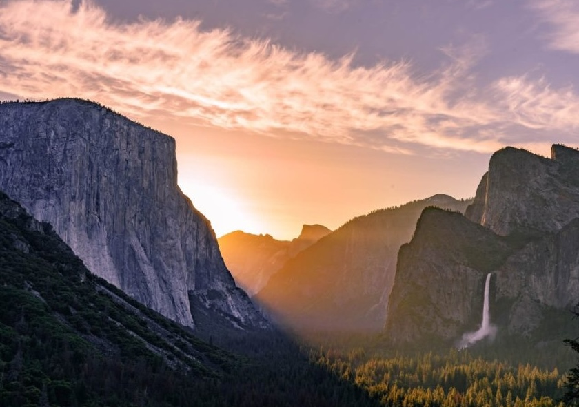
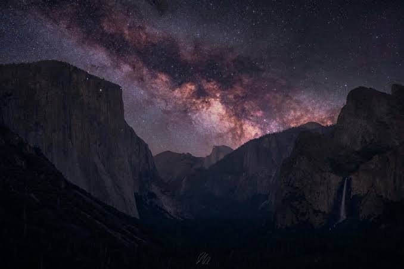
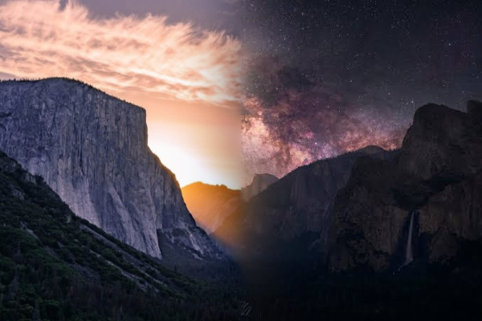
For this blend, I placed my face onto the head of a Smiski figure. My photo was shrunk and shifted so my face fills the Smiski's head, and an ellipse mask selects my face. The blend gives my face some of the Smiski's pale green tint toward the edges, so it looks like part of the figure instead of being pasted on.
Getting the ellipse right took a few tries. When the ellipse was too large, my dark hair was inside it and blended into a gray ring around my face. Shrinking the ellipse fixed the ring but uncovered one of the Smiski's own eyes next to my glasses, so the final ellipse is a compromise between the two. I also blurred the mask slightly before building its stack, which softens the transition of the finest details.
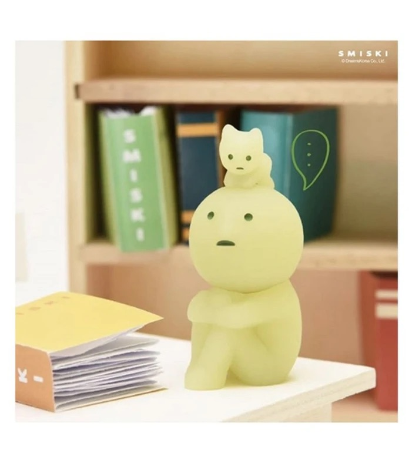
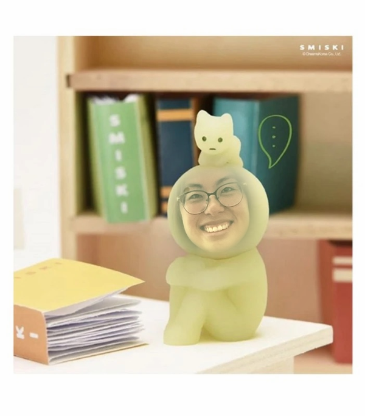
For this blend, I replaced the full moon in a landscape photo with the Smiski's head. The Smiski was scaled down to about a third of its size so its head matches the moon, and a circular mask just inside the moon's edge keeps the Smiski's body out of the result. The Smiski's pale yellow-green color is close to the moon's, so the head looks like it is glowing in the sky.
The number of levels mattered a lot here. The moon is only about 50 pixels across, and with many levels, the coarsest blurs spread the mask far wider than the moon itself. At those levels the mask is close to 0 at the moon, so the head's overall color would come from the purple sky and look washed out. Using 4 levels keeps the largest blur roughly the size of the moon, so the head keeps its color while the edge still blends smoothly.
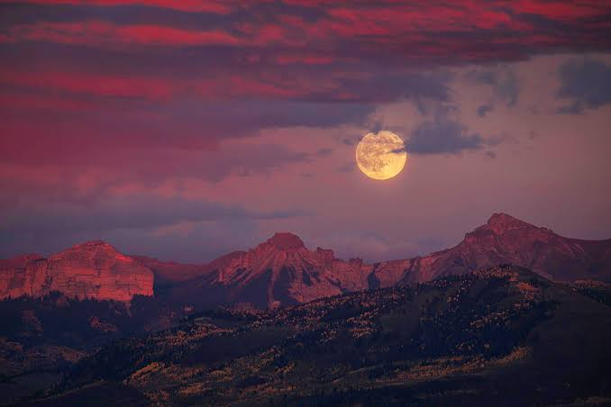
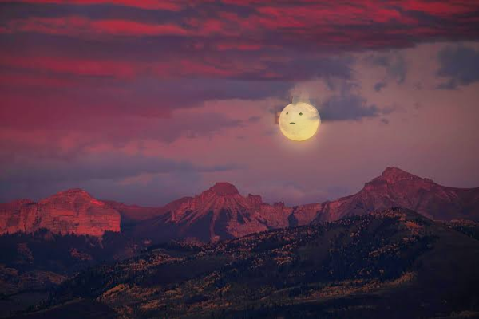
The figure below shows the blend at each level of the Laplacian stack. The columns are the masked Smiski, the moon photo masked with one minus the mask, and their sum. The rows go from the highest frequencies at the top, where the seam is sharp, to the lowest frequencies, where the mask is widely blurred. The bottom row adds up all the levels, giving the masked inputs and the final blend.
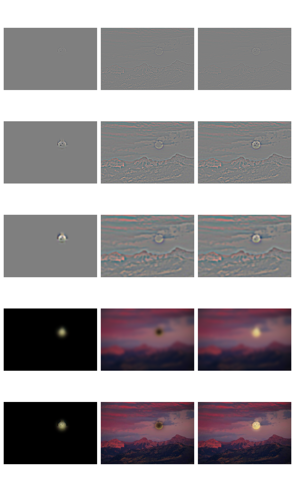